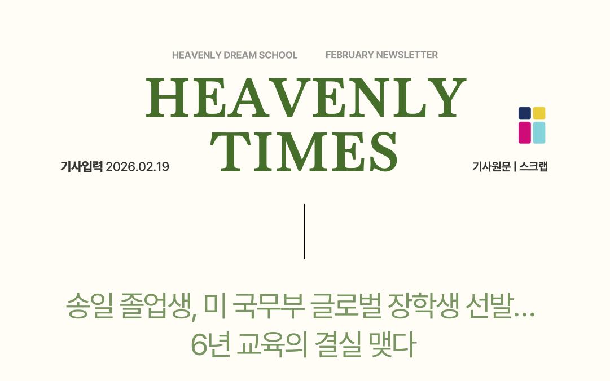
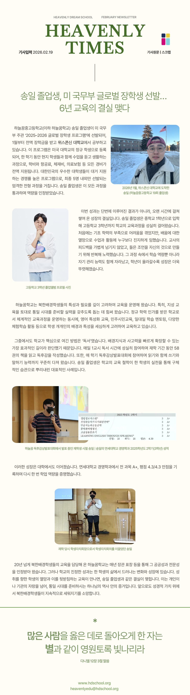
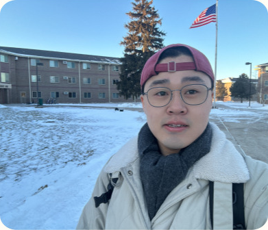
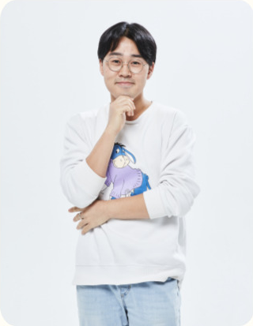
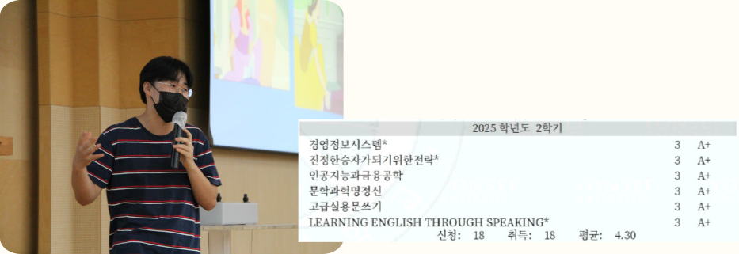
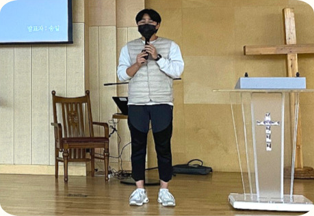
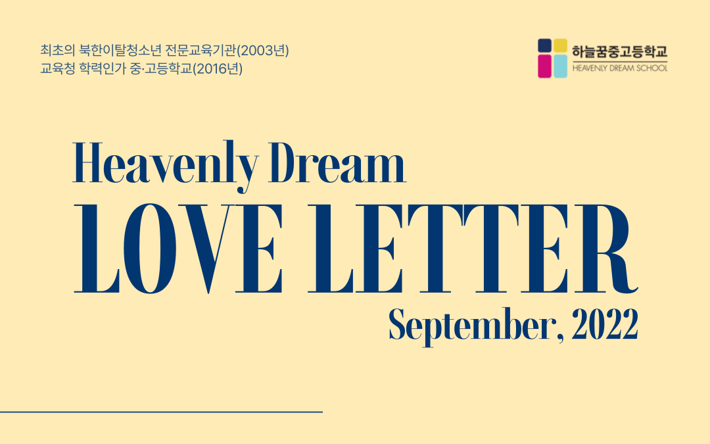
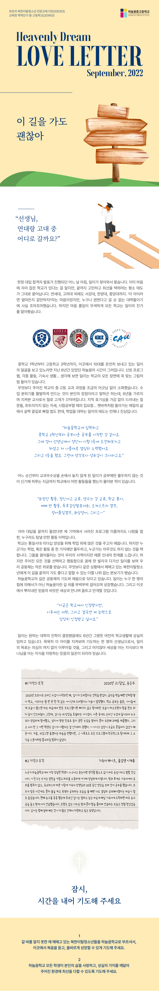
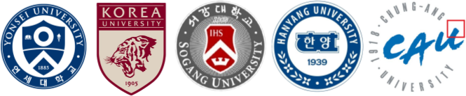

SGH Warsaw School of Economics (폴란드)SGH Warsaw School of Economics (Poland)
- 2026.10 ~ 2027.02
- Yonsei University 교환 프로그램Yonsei University Exchange Program

허들링(Huddling)이란, 황제펭귄들이 한데 모여 서로의 체온으로 혹한의 겨울 추위를 견디는 방법으로 무리 전체가 돌면서 바깥쪽과 안쪽에 있는 펭귄들이 계속해서 서로의 위치를 바꾸는 것을 의미합니다. 바깥쪽에 있는 펭귄들의 체온이 떨어질 때 서로의 위치를 바꾸므로 한겨울의 추위를 함께 극복할 수 있습니다.Huddling is how emperor penguins survive the harshest cold of the Antarctic winter: they gather in a tight group and share body heat, with the whole colony slowly rotating so that the penguins on the outer edge and those closer to the center keep trading places. As the outermost penguins start to lose warmth, they shift positions with those inside, letting the group weather the depths of winter together.
한때, 저 또한 도움이 필요했고, 대가를 바라지 않고 도와주신 많은 분들 덕분에 지금까지 잘 성장할 수 있었습니다. 도움을 주셨던 모든 분들께 진심으로 감사드립니다. 아직 부족하지만, 저도 도울 수 있는 부분을 도우면서 한 걸음씩 성장해가고 있습니다. 제가 받은 사랑을 잊지 않고, 다시 사회에 흘려보내는 사람으로 성장하고 싶습니다.There was a time when I needed help too, and I have been able to grow into who I am today because so many people supported me without ever expecting anything in return. I am deeply grateful to everyone who has helped me along the way. I still have far to go, but I am growing step by step, lending a hand wherever I can. I hope to become someone who never forgets the love I was given, and who keeps passing that love forward into the world.
미국 국무부 Global Scholar 선정 기사 외 1편Named a U.S. Department of State Global Scholar — and one earlier feature
보기 →View →SEF 2025 SDGs 학부 연구 프로젝트 주도, IGEE Proceedings 논문 게재Led the SEF 2025 SDGs undergraduate research project — published in IGEE Proceedings
보기 →View →드럼·기타·피아노 — Pep Band·교회·대학 밴드 연주Drums, guitar, and piano — Pep Band, church, and university band performances
보기 →View →소개About소개Bio연혁Journey
북한 출생 · Yonsei 경영학 · SGH·UWGB 교환 · 한국어·영어·중국어Born in North Korea · Business at Yonsei · Exchange at SGH & UWGB · Korean, English, Chinese
활동Experience교환 프로그램Exchange Programs리더십Leadership북한 관련 강연Talks on North Korea봉사Volunteering교육·멘토링Teaching & Mentoring후원 단체Organizations Supported동아리Clubs독서 모임Book Club방문 국가Countries Visited기타Other
UGRAD · Fulbright Korea · 리더십 · 북한 강연 · 봉사·멘토링 · 여행UGRAD · Fulbright Korea · Leadership · Talks on North Korea · Volunteering & Mentoring · Travel
아래 기관에서 북한의 경제·교육·사회 등을 주제로 강연Lectures on North Korea's economy, education, and society at the organizations below

받고 있는 장학금 일부를 아래 단체에 소량으로 기부하면서 조금씩 나누는 연습을 하고 있습니다.I practice giving a little at a time by donating a small share of my scholarship to the organizations below.
 Global UGRAD 수료증Global UGRAD Certificate of Completion
Global UGRAD 수료증Global UGRAD Certificate of Completion
 Global UGRAD OPAL 수료증Global UGRAD OPAL Certificate
Global UGRAD OPAL 수료증Global UGRAD OPAL Certificate
 SEF 2025 활동 확인서SEF 2025 Activity Verification
SEF 2025 활동 확인서SEF 2025 Activity Verification
 사회혁신역량 비교과 활동 확인서 (워크스테이션)Social Innovation Co-curricular Activity Verification (Workstation)
사회혁신역량 비교과 활동 확인서 (워크스테이션)Social Innovation Co-curricular Activity Verification (Workstation)
 2025-1학기 오프라인 튜터링 우수팀 상장Outstanding Tutoring Team Award (Spring 2025)
2025-1학기 오프라인 튜터링 우수팀 상장Outstanding Tutoring Team Award (Spring 2025)
 2024-2학기 오프라인 튜터링 수료증Offline Tutoring Completion Certificate (Fall 2024)
2024-2학기 오프라인 튜터링 수료증Offline Tutoring Completion Certificate (Fall 2024)
 2024-2학기 오프라인 튜터링 우수팀 상장Outstanding Tutoring Team Award (Fall 2024)
2024-2학기 오프라인 튜터링 우수팀 상장Outstanding Tutoring Team Award (Fall 2024)
 강의역량 강화 워크숍 이수증 (ChatGPT와 교육 2부)Teaching Capacity Workshop Certificate (ChatGPT in Education, Part 2)
강의역량 강화 워크숍 이수증 (ChatGPT와 교육 2부)Teaching Capacity Workshop Certificate (ChatGPT in Education, Part 2)
 강의역량 강화 워크숍 이수증 (ChatGPT와 교육 1부)Teaching Capacity Workshop Certificate (ChatGPT in Education, Part 1)
강의역량 강화 워크숍 이수증 (ChatGPT와 교육 1부)Teaching Capacity Workshop Certificate (ChatGPT in Education, Part 1)
프로젝트 & 역량Projects & SkillsEcoStep 앱EcoStep AppPowerPoint자격증CertificationsAINotion
EcoStep 앱 · PPT · ITQ·GTQ·HubSpot · AI · NotionEcoStep App · PPT · ITQ, GTQ, HubSpot · AI · Notion
관심 연구Research Interests연구 경험Research Experience전공 수강 과목Major Coursework
전략 · 혁신 · 문화(조직문화, 문화와 경영전략) · 경제 체제와 비즈니스 · AI와의 시너지 · 1인 창업Strategy · Innovation · Culture (Organizational Culture, Culture & Business Strategy) · Economic Systems & Business · Synergy with AI · Solo Entrepreneurship
수상 & 기사Awards & Press대학교University중고등학교Middle & High School기사Press
경영학과 최우등 · GPA 4.16/4.30 · SEF 2025 장려상 · 고교 성적 우수 · 기사 2편Distinguished Honors in Business · GPA 4.16/4.30 · SEF 2025 Encouragement Award · Strong Academic Performance in High School · 2 Press Articles



Il Song, an alumnus of Heavenly Dream Middle & High School (Heavenly Dream School), has been selected for the U.S. Department of State's 2025–2026 UGRAD Program and has been studying at the University of Wisconsin on a full scholarship since January. Under the program, he is enrolled as a regular student at a U.S. university, spending one semester taking classes and living alongside local students, with tuition, airfare, living expenses, health insurance, and every other cost fully covered. It is a highly competitive program, drawing large numbers of applications from South Korea's top university students, with only about five of these applicants ultimately selected through a rigorous screening process. Il Song successfully completed this entire process and earned recognition for his abilities.

This achievement did not come about overnight — it is the fruit of growth built up over a long time. Il Song enrolled as a first-year middle school student and diligently followed the school's curriculum all the way through his final year of high school. At first he struggled with a lack of basic academic skills, but his eagerness to learn led him to approach classes and activities more seriously than anyone else. He never took a teacher's feedback lightly, and he worked repeatedly to make the advice he received truly his own. Through that process, he developed not only academic ability but also self-management skills, and his growth became more and more evident with each passing grade.
Heavenly Dream School has shaped its education around deep consideration for the characteristics and needs of students with North Korean backgrounds. In particular, it has emphasized intellectual development as a foundation for the competence students need to prepare for an era of reunification. As an officially accredited school, it runs a systematic curriculum while offering English-focused education, education in democratic citizenship, one-on-one academic mentoring, and a variety of experiential learning activities — with careful attention to each student's individual background and characteristics.
Among these methods, the one the school regarded as central was "reading." It judged reading to be the most effective way to rapidly expand a student's background knowledge and thinking ability. He attended the school's daily first-period reading time faithfully and, over his years there, read 58 books and wrote book reports. He also took part in the book-report presentation contest every semester, steadily building not only his reading but also his writing and speaking skills. Il Song is a clear example of how the school's educational philosophy has taken root as a real habit through one student's practice.

This growth continued into university as well. In the Fall 2025 semester, he earned an A+ in every course in the Department of Business Administration at Yonsei University, achieving a perfect semester GPA of 4.3 out of 4.3 — once again proving his academic ability.

Heavenly Dream School, which has been educating students with North Korean backgrounds for more than 20 years, has had its contribution to the public good and its educational expertise recognized every year through ministerial commendations and other honors. But the school's true achievement lies in the change and growth revealed in the life of a single student. When a student's aspiration for achievement meets the education that supports it, it bears fruit such as Il Song's. This is more than a source of pride for an individual or an institution — it is evidence of God's work in preparing for an era of reunification. Going forward, the school hopes that students with North Korean backgrounds will continue to be built up on a foundation of biblical values.
Those who lead many to righteousness will shine like the stars for ever and ever.Daniel 12:3, NIV, adapted
출처Translated from the Korean original — Heavenly Times, 2026.02.19


"Teacher, between Yonsei University and Korea University, which one should I go to?"
One morning, right in the middle of college acceptance season, Il came to ask me something. I could tell he already had a school in mind, but true to his usual way, he weighed it carefully to the very end, determined to choose the best option. Yonsei University, Korea University — and beyond them, even Sogang University, Hanyang University, and Chung-Ang University. "This kid could get into any of them!" I thought to myself — but since wanting to attend doesn't guarantee acceptance, I was honestly on edge. Still, despite all that worry, every school recognized Il's true worth.

Looking at Il, who has been spending his entire teenage years here — from his first year of middle school through his final year of high school — I can picture the past six years at Heavenly Dream unfolding before me. Faith programs, all kinds of activities, dormitory life... Thinking back, he fits into every scene at school like a perfectly matching picture.
Above all, he has kept pace with the school's middle- and high-school curriculum without ever falling behind. He often says that livening up the classroom atmosphere is one of his strengths, and having taught and watched him for six years, I find myself nodding along without even meaning to. Questions that reveal his intellectual curiosity without holding back, an unwavering focus, and sheer doggedness when preparing for exams... in the treadmill of everyday school life, it would be understandable if he drifted off course now and then, but Il's attitude toward his studies has always been sincere.
"After I enrolled at Heavenly Dream School, I think I really started studying, in the proper sense, from 8th grade. At that time, my English teacher challenged me to aim for first place on an English vocabulary test, and I worked hard at it in my own way. And I got first place. The sense of accomplishment was bigger than I expected."
At some point, Il began winning the Academic Excellence Award again and again, and yet I found it curious that he didn't focus solely on his studies — so one day I asked him what activities he had taken part in at school so far.
"Student council leadership activities, exchange activities with Chungshin Girls' High School, exchange activities with Living Water Christian School, school volunteer work, worship group activities, the book-report presentation contest, orchestra camp, the English Unification Camp, video-call English lessons, and..."
Had I heard his answer all the way through, it would probably have included program names that have faded from my own memory — an activity record anyone would envy.
Beyond academics, the school works hard to give students many things in order to raise up leaders for an era of reunification. But some students throw themselves into only one thing — academics or activities — while others choose to do nothing at all. Lifting those students up is our ministry, though at times we feel the limits of our patience. Even so, watching Il embrace and act on everything given to him, stepping one step closer to his dream, our community finds a small comfort. Above all, he has become an ideal example that lets us tell young North Korean defectors struggling in the same situation that it is alright to walk this path all the way to the end.
Heavenly Dream School's path is being paved by the community's prayer and effort. Il grew by walking, step by steady step, along the road called Heavenly Dream — not through the strength of any one person alone. And the seed of faith that took root here will sprout and bloom in full as it meets the world.
"Right now, I'm recognized here at school, but next I want to be recognized at university, and eventually I want to earn that recognition with confidence, on my own ability."
Even though he has already secured admission to the university he wanted, Il continues to devote himself faithfully to school life, just as he has for the past six years. As a teacher who quietly watches over him and prays for him, I believe without a doubt that Il's goals will be achieved, and that before long he will become a faithful worker for God, taking greater pride in knowing God than in knowing the world.
In 2020, the year online classes began because of COVID, I got word that Il had collapsed. He was a kid who always piled his school lunch tray sky-high and never once complained of being sick, so hearing that he'd collapsed made my heart drop. I thought of how he never missed a single program — whether it was schoolwork or an activity meant simply to help the students — and felt for him, thinking it might well have been hard on him. But Il turned out to be beyond anything I could have imagined. Even while sick, he logged into online classes and took part more faithfully than anyone, and he even worked on his own until nightfall to catch up on the classes he had missed for hospital visits, before submitting his assignments. And not a single student in our class ever realized that Il had been sick. That was because his daily life never wavered, not even a little. Every so often I told him I wished he'd rest, but even so, he continued to take an active part in every program that followed, absorbing its benefits like a sponge.
If someone asked me who the most diligent student at Heavenly Dream School is, I wouldn't have to think twice — I'd say Il Song right away. This friend of mine has a burning passion and treats each day as precious, living it out with diligence and sincerity. He never stopped studying in the dorm even after school, and on busy mornings before class, he'd spend thirty minutes studying English with a teacher at the dormitory by watching videos together. Whenever I saw him, alone with the light on while everyone else slept, quietly studying, it made me want to study hard myself. During a period when there were occasional games of basketball, Il was a beginner who wanted to improve, and every day, the moment he got back to the dorm, he'd grab a basketball and head straight outside to practice. Watching him practice alone in the dark, sweating it out with no lights on, was truly admirable. Il is like a younger brother to me — someone I've learned a great deal from during our time together in the dorm, and someone I always want to brag about.
1. Please pray that God will call young North Korean defectors who are wandering, not knowing which way to go, to Heavenly Dream School, so that they may hear the gospel here and grow up in the right way.
2. Please pray that every student at Heavenly Dream School would love their own life, come to know the value of diligence, and do their very best in the circumstances they've been given.
출처Translated from the Korean original — Heavenly Dream Love Letter, 2022.09
기타More음악Music사진 & 영상Photos & Videos
드럼 · 기타 · 피아노 · 사진 · 영상Drums · Guitar · Piano · Photos · Videos